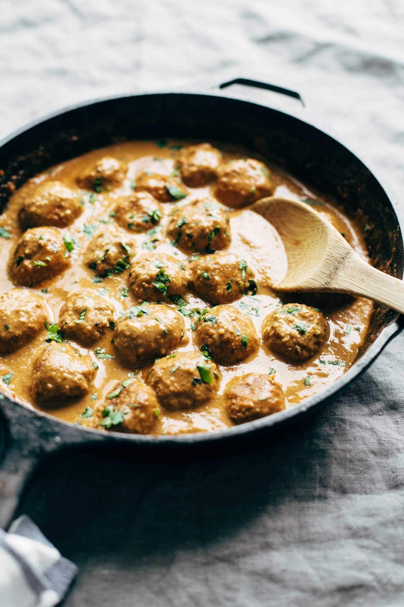

Here they are! The meatballs of the hour – that are, actually, not meatballs.
Because they are VEGETARIAN MEATBALLS! Made without beans (we’re going rogue!) and made instead with cauliflower and brown rice and quinoa.
I know, right? Sneak-ayyy.
As much as I love a good MEAT-ball meatball from time to time, today we’re talking about these little vegetarian meatball nuggets of powerhouse nutrition that are inspired from the (here comes the weird zone) spicy cauliflower burgers I made and loved a few weeks ago.
The breakdown is that they’re made with cauliflower, brown rice, quinoa, oat flour, eggs, and a nice big pinch of garlic and spices. And they don’t require hours of prep. That’s it! It’s just simple, straightforward, SUPER YUM plant-based goodness in the form of vegetarian meatballs made weeknight-dinner-friendly, because real food that matches real life is where it’s at.
And don’t we know it, guys? DON’T WE KNOW IT.
how to make our vegetarian meatballs (in 1 min)
There are a few things that I think we can all approve of with these vegetarian meatballs:
INGREDIENTS: Basic, whole, wonderful –> Cauliflower // Brown Rice // Quinoa // Garlic // Spices // Eggs // Oat Flour (which is nothing more than just old fashioned oats crushed in your food processor or blender). Also – no beans. Which is kind of nice, right? since a lot of vegetarian meatballs are bean-heavy. All hail the versatility of cauliflower!
TIMING30 minutes. The cauliflower is not high maintenance here. Just a quick simmer in some hot water to soften it up, and then as a bonus on being speedy, you can use those amazingly convenient garlic brown rice quinoa packages from Seeds of Change that you buy en masse at Costco – you know the ones, right? – and then your cauli and your rice and everything else gets pulsed around in our favorite appliance of all time THE FOOD PROCESSOR in order to make the mixture. If you can enlist the help of a few vegetarian meatball rollers (this is why people have children, right?), you will have vegetarian meatball dinner on the table AND vegetarian meatball stockpile built up in your fridge in no time.
ADAPTABILITYCook once, eat many times. This recipe makes a million and a half meatless meatballs which means that you can use them with many different sauces in many different recipes for years to come. Er, no. Not years. But seriously – you will have a TON of meatballs with this recipe, so start brainstorming serving and/or sauce ideas (and please let the record state that I strongly recommend LIFE CHANGING MASALA SAUCE).
Yesterday I brought a freezer-ready bag of these to my sister since she just had a new baby, and I was feeling a little vulnerable about being the weird sister who brings non-meat meatballs as a food gift, but right away when she saw them, she declared them to be a perfect finger food for her two-year-old since he loves things he can hold and dip and nibble on at his own slow-eating pace. UM WHAT. As a non-mom, I didn’t even think of that genius, but how cute is the visual of your favorite two- year-old dipping a veggie meatball made with cauliflower and quinoa and brown rice into ketchup or marinara or ranch (not above it) or – for the foodie toddlers out there – a little spicy masala sauce? It’s like a chicken nugget meets veggie burger in kid-friendly size.
I’m sure that someday, when Bjork and I have kids, they will be foodie kids who love to dip veggie nuggets in masala sauce, right?
That sort of thing has to be genetic? PLEASE SAY YES

I cannot get enough of these vegetarian meatballs with a few gallons of the life-changing 30 minute masala sauce, but I’d be okay if you did just about anything with these. They are begging for some creative serving combinations and a good drench in a delicious sauce, and as we know, sauce is life.
Go get em, dinner-makers!
30-minute vegetarian meatballs
description
30 Minute Vegetarian Meatballs – cauliflower, quinoa, brown rice, garlic, and spices. SUPER versatile – recipe makes a huge batch so you can stockpile them in your freezer for easy meals later!
ingredients
3 cups cauliflower florets (roughly 1 head of cauliflower)
3 cups cooked quinoa and/or brown rice (see notes)
3/4 cups of a “dry ingredient” like oat flour, almond meal, breadcrumbs, etc.
enough olive oil to cover the bottom of a frying pan with a thin coating
instructions
Cauliflower Cook the cauliflower florets in a pot of boiling water for about 5 minutes, till fork-tender. Drain well.
Mix Pulse the quinoa and cauliflower through a food processor until semi-smooth (see pictures for texture). Transfer mixture to a large mixing bowl and combine with all other ingredients. Stir until everything is incorporated. Roll into small balls (about one heaping tablespoon per ball was best for me).
Cook Heat a thin layer of olive oil in a skillet over medium heat – add the balls and cook for a few minutes on each side – they will need to be gently turned every so often to get browned all the way around. Serve with yummy sauces, salads, bowls, or freeze for later!
notes
I used Seeds of Change pre-cooked garlic brown rice and quinoa for this recipe (2 packets = about 3 cups). Since this has garlic flavor already in the mix, if you are using your own pre-cooked quinoa and/or brown rice, make sure to add some minced garlic or garlic powder.
If the mixture doesn’t stick together in a ball when gently pressed, add about 1/3 of the mixture back into the food processor and pulse until it’s more the consistency of hummus. That should help it hold together. If that still isn’t enough, just add a little more of your “dry ingredient” till you get a consistency that you can gently roll between your hands to form ball shapes.
Nutrition facts are for 1/12th of this recipe, so just take your total # of meatballs and divide them into 12 servings – the exact number of meatballs per serving depends on how big you make the meatballs.